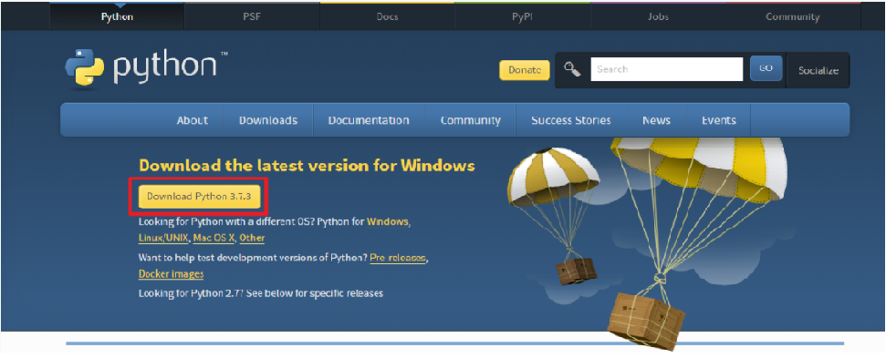

이제 실습을 위해 컴퓨터에 파이썬을 설치해 보자. 이 책에서는 윈도우에서 설치하는 방법만 다룬다. 다른 시스템을 사용할 경우 파이썬 홈페이지(http://www.python.org)의 설명을 참고하자.
윈도우에서 파이썬 설치하기
1. 우선 파이썬 공식 홈페이지의 다운로드 페이지(http://www.python.org/downloads)에서 윈도우용 파이썬 언어 패키지를 다운로드한다.
다음 화면에서 Python 3.x로 시작하는 버전 중 가장 최근의 윈도우 인스톨러를 다운로드하자(이 글을 작성하는 시점의 최신 버전은 3.7.3이다).

2. 인스톨러를 실행한 후에 "Install Now"를 선택하면 바로 설치가 진행된다.
파이썬이 어느 곳에서든지 실행될 수 있도록 "Add Python 3.7 to PATH" 옵션을 반드시 선택해야 한다.

※ "Add Python 3.7 to PATH" 옵션을 누락하면 이후 실습할 때 오류가 발생할 수 있다. 만약 Python이 설치되는 경로와 PATH에 대한
사전 지식이 있는 사용자라면 이 옵션을 생략해도 된다.
3. 설치가 완료되면 [close]를 클릭하여 종료한다.
파이썬 기초 실습 준비하기
파이썬 프로그래밍 실습을 시작하기 전에 기초적인 것을 준비해 보자.
[시작] 메뉴에서 [프로그램 → Python 3.7 → Python 3.7(32-bit)]을 선택한다.

Python 3.7.3 (v3.7.3:ef4ec6ed12, Mar 25 2019, 21:26:53) [MSC v.1916 32 bit (Intel)] on win32
Type "help", "copyright", "credits" or "license" for more information.
>>>
위와 같은 창을 파이썬 대화형 인터프리터라고 부른다. 여기서 인터프리터란 사용자가 입력한 소스 코드를 실행하는 환경을 뜻한다. 그렇다면 "대화형"이란 무슨 의미일까? 다음과 같이 간단한 수식을 입력해 보자.
>>> 1 + 1
2
입력에 따른 결괏값이 바로 출력된다. 이렇게 입력과 출력이 번갈아 이어지는 것이 마치 대화하는 것처럼 느껴지기 때문에 파이썬 ‘대화형’ 인터프리터라고 부른다. 대화형 인터프리터를 사용하면 간단한 예제를 풀 때 결과를 바로 확인할 수 있어 학습에 효과적이다. 앞으로 파이썬의 기본적인 내용은 이 창을 사용해 실습할 것이다.
※ 파이썬 대화형 인터프리터를 간단히 파이썬 셸(Python shell)이라고도 부른다. 3개의 꺾은 괄호(>>>)는 프롬프트(prompt)라고 한다.
대화형 인터프리터를 종료할 때는 [Ctrl+Z → Enter] 를 누른다 (유닉스 계열에서는 [Ctrl+D]). 또는 다음과 같이 sys 모듈을 사용해 종료할 수도 있다.
>>> import sys
>>> sys.exit()